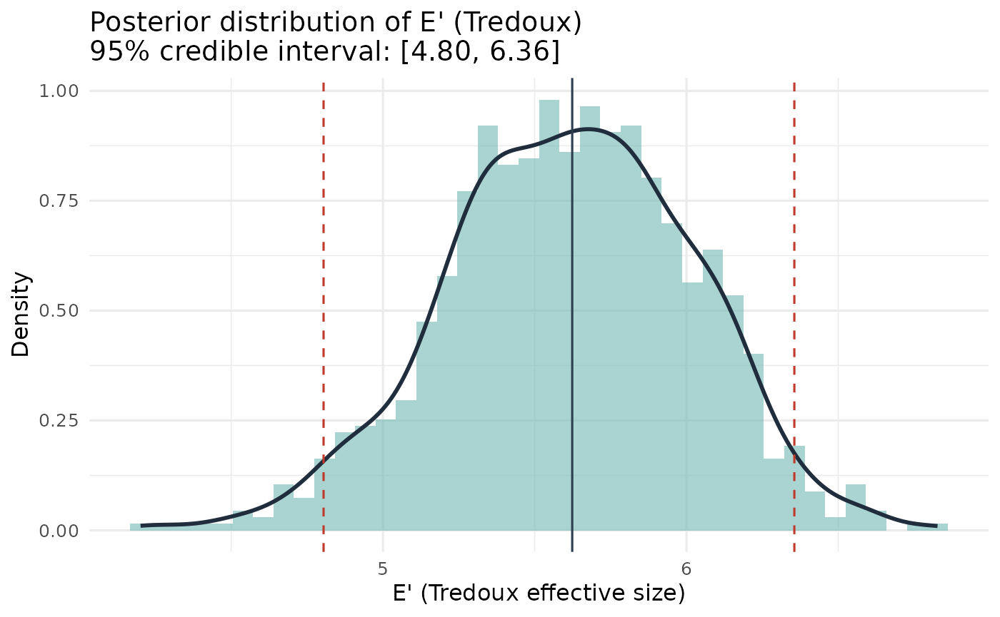
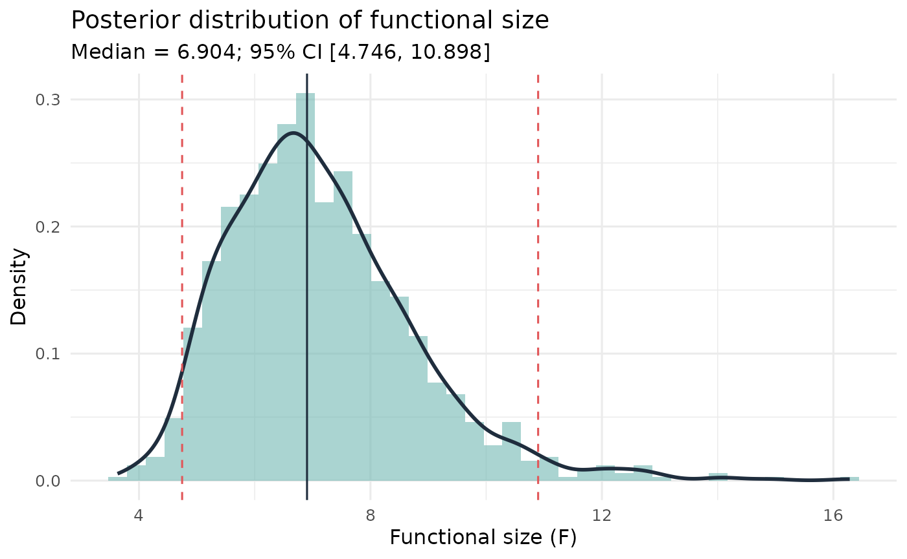
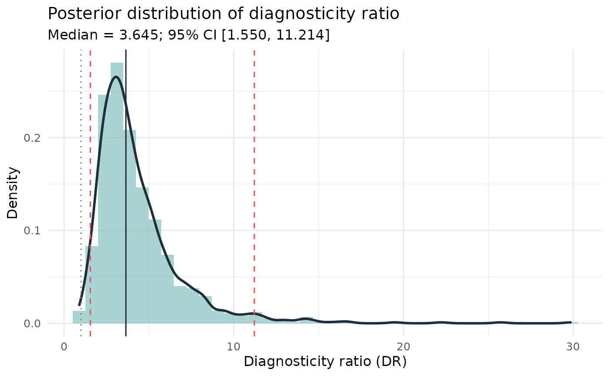
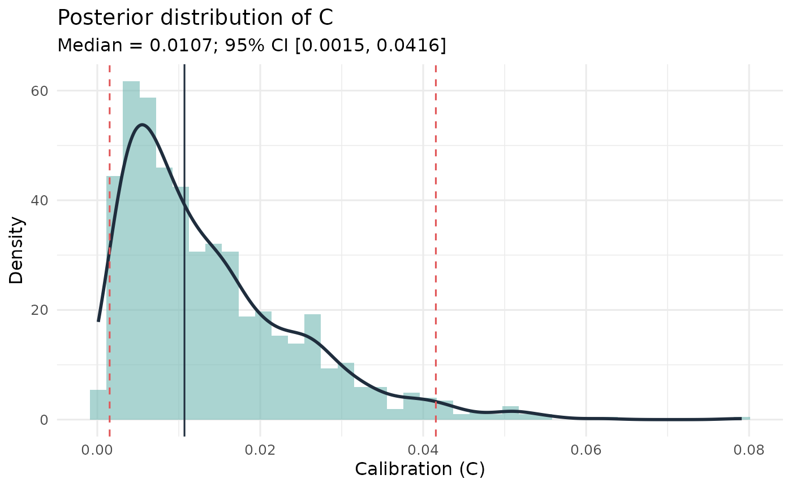
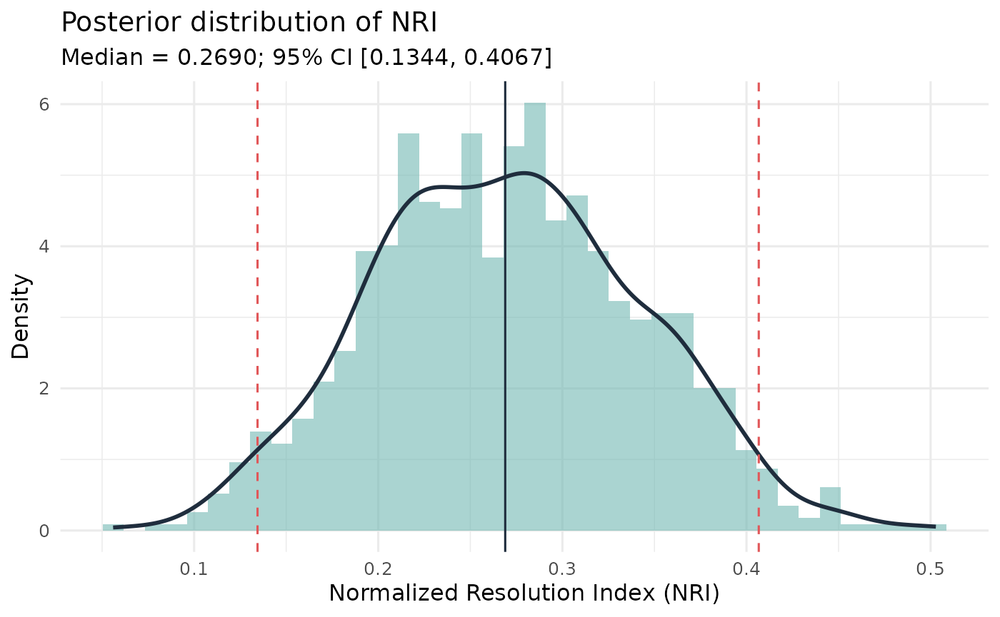
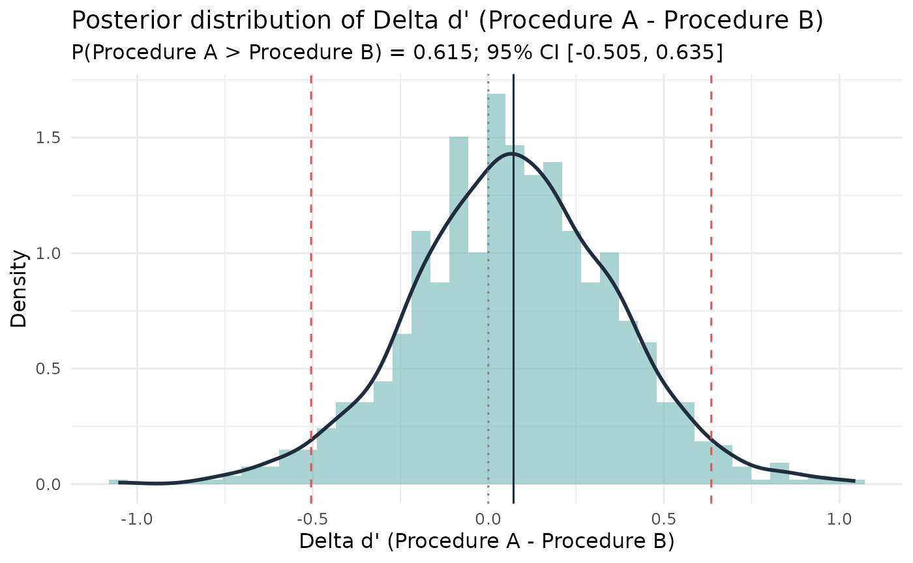

Bayesian Inference for Lineup Measures
Source:vignettes/bayesian_inference.Rmd
bayesian_inference.RmdPurpose
This vignette shows the Bayesian posterior summaries in r4lineups for lineup fairness and confidence-based eyewitness measures.
Use these functions when you want credible intervals or direct
probability statements such as
,
,
or
.
The examples use small posterior samples so that the vignette runs
quickly during package checks; increase S for final
analyses.
Data Shapes
The Bayesian fairness functions use mock-witness lineup choices:
- a lineup vector, where each value is the chosen lineup position; or
- a lineup table, where each cell is the count for one lineup position.
The Bayesian calibration function uses the standard confidence-based
data frame with target_present,
identification, and confidence. The SDT
comparison uses summary counts: hits, misses, false alarms, and correct
rejections for two conditions.
Tredoux Effective Size
esize_T_bayes() fits a Dirichlet-multinomial model to
the lineup choice counts and transforms each posterior draw of the
choice-probability vector to Tredoux’s effective size
.
data(nortje2012)
lineup_vec <- nortje2012$lineup_1
k <- max(lineup_vec, na.rm = TRUE)
lineup_table <- table(factor(lineup_vec, levels = seq_len(k)))
set.seed(1)
esize_post <- esize_T_bayes(
lineup_table,
alpha = 0.5,
S = 1000,
threshold = k
)
esize_post
#> Bayesian Posterior: Tredoux Effective Size (E')
#> ------------------------------------------------
#> k (positions): 8 N (choices): 133 S (draws): 1000
#> Prior: Dirichlet(alpha = 0.50)
#> Posterior mean: 5.614
#> Posterior median: 5.624
#> 95% credible interval: [4.804, 6.355]
#> P(E' < 8.00 | data): 1.000
#> P(E' > 8.00 | data): 0.000
plot(esize_post)
The threshold argument makes the posterior useful for fairness benchmarks. For example, with a six-person lineup one might inspect as a posterior probability that the effective size falls below nominal size.
Functional Size
func_size_bayes() models the suspect-selection rate with
a beta-binomial posterior and transforms posterior draws to functional
size.
set.seed(2)
func_post <- func_size_bayes(
lineup_vec,
target_pos = 3,
alpha = 0.5,
S = 1000,
threshold = k
)
func_post
#> Bayesian Functional Size - Beta-Binomial model
#> Prior: Jeffreys-type Beta(0.50, 0.50)
#> n = 133, suspect IDs = 19 (rate = 0.143)
#> Posterior mean F: 7.144
#> Posterior median F: 6.904
#> 95% credible interval: [4.746, 10.898]
#> P(F < 8.000 | data): 0.7480
#> P(F > 8.000 | data): 0.2520
plot(func_post)
Diagnosticity Ratio
diag_ratio_T_bayes() models target-present and
target-absent suspect-selection rates with independent beta-binomial
posteriors and returns the posterior of the diagnosticity ratio.
tp_vec <- nortje2012$lineup_1
ta_vec <- nortje2012$lineup_2
set.seed(3)
diag_post <- diag_ratio_T_bayes(
lineup_pres = tp_vec,
lineup_abs = ta_vec,
pos_pres = 3,
pos_abs = 3,
k1 = max(tp_vec, na.rm = TRUE),
k2 = max(ta_vec, na.rm = TRUE),
alpha = 0.5,
S = 1000,
threshold = 1
)
diag_post
#> Bayesian Diagnosticity Ratio (Tredoux) - Beta-Binomial model
#> Prior: Jeffreys-type Beta(0.50, 0.50)
#> TP lineup: n = 133, suspect IDs = 19
#> TA lineup: n = 133, suspect IDs = 5
#> Posterior mean DR: 4.337
#> Posterior median DR: 3.645
#> 95% credible interval: [1.550, 11.214]
#> P(DR < 1.000 | data): 0.0010
#> P(DR > 1.000 | data): 0.9990
plot(diag_post)
The threshold 1 is useful because
indicates that suspect identifications are more common in the
target-present lineup than in the target-absent lineup.
Calibration
calibration_bayes() places beta posteriors on accuracy
within confidence bins and propagates uncertainty into calibration
,
over/underconfidence
,
and normalized resolution
.
data(lineup_example)
set.seed(4)
cal_post <- calibration_bayes(
lineup_example,
confidence_bins = c(0, 60, 80, 100),
alpha = 0.5,
S = 1000
)
cal_post
#> Bayesian Calibration Analysis - Beta-Binomial model
#> n = 75; 3 confidence bins; prior alpha = 0.50
#> C (calibration): mean = 0.0138, median = 0.0107, 95% CI [0.0015, 0.0416]
#> O/U (over/underconf): mean = 0.0351, median = 0.0348, 95% CI [-0.0384, 0.1094]
#> NRI (resolution): mean = 0.2697, median = 0.2690, 95% CI [0.1344, 0.4067]
#> (Frequentist: C = 0.0081, O/U = 0.0267, NRI = 0.2670)
plot(cal_post, metric = "C")
plot(cal_post, metric = "NRI")
SDT d’ Comparison
sdt_compare() compares two conditions using summary SDT
counts. It draws from posterior hit and false-alarm rates, converts each
draw to
,
and reports the posterior for
.
set.seed(5)
sdt_post <- sdt_compare(
hits_A = 45, misses_A = 55, fas_A = 12, crs_A = 88,
hits_B = 38, misses_B = 62, fas_B = 10, crs_B = 90,
label_A = "Procedure A",
label_B = "Procedure B",
alpha = 0.5,
S = 1000
)
sdt_post
#> Bayesian SDT Comparison: Procedure A vs Procedure B
#> Prior: Jeffreys Beta(0.50, 0.50) on HR and FAR
#> Posterior mean d': Procedure A = 1.042, Procedure B = 0.971
#> Delta d' (Procedure A - Procedure B):
#> Posterior mean: 0.072
#> Posterior median: 0.072
#> 95% CI: [-0.505, 0.635]
#> P(d'_Procedure A > d'_Procedure B | data): 0.6150
#> P(d'_Procedure B > d'_Procedure A | data): 0.3850
#> (Frequentist z-test: z = 0.254, p = 0.7994)
plot(sdt_post)
Workflow Position
These Bayesian functions complement, rather than replace, the frequentist and bootstrap functions elsewhere in the package:
- use normal-theory functions for quick classical intervals where assumptions are acceptable;
- use bootstrap functions when you want sampling-distribution uncertainty with minimal distributional assumptions;
- use Bayesian functions when credible intervals and direct posterior probabilities are the clearest way to express uncertainty.
For substantive reports, run enough posterior draws for stable
summaries and check sensitivity to the prior concentration, for example
alpha = 0.1, 0.5, and 1.